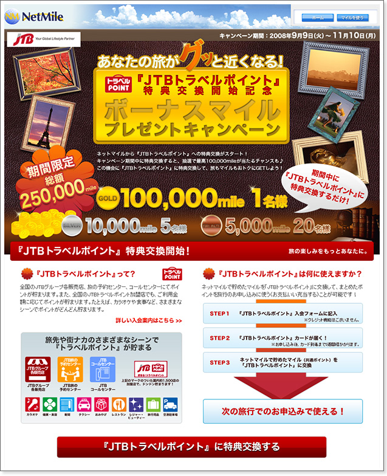

プレスリリース
2008年9月9日
株式会社ネットマイル
ネットマイル社、JTB社と提携
『JTBトラベルポイント』への交換を開始
～ あなたの旅がグッと近くなる！ボーナスマイルプレゼントキャンペーンも同時開催 ～
インターネット上の共通ポイントプログラムを運営する株式会社ネットマイル（本社 ： 東京都千代田区、代表取締役社長：山本雅、以下、ネットマイル社）は、株式会社ジェイティービー（本社 ： 東京都品川区、代表取締役社長 ： 田川博己、以下、ジェイティービー社）と提携し、同社のポイントプログラム『JTBトラベルポイント』との特典交換サービスを、本日2008年9月9日（火）14：00より開始いたします。
『JTBトラベルポイント』は、JTBグループ各販売店や加盟店で旅行や買い物などのサービスをご利用するごとに付与されるポイントです。貯めた『JTBトラベルポイント』は、JTBグループ各販売店で旅行代金としてご利用いただけます。
【『ネットマイル』から『JTBトラベルポイント』への特典交換サービス 概要】
| 交換開始日 | 2008年9月9日（火）14：00より開始 |
|---|---|
| 交換条件 | ネットマイルの会員ご本人が『JTBトラベルポイント』の会員であること。 （ネットマイルから『JTBトラベルポイント』への移行のみ） |
| 交換レート | ネットマイル1,000mile（1口） → 500トラベルポイント |
| 最低交換数 | 2口から移行可能(2,000mile ＝ 1,000トラベルポイント） |
また、サービス開始を記念して、2008年9月9日（火） ～ 11月10日（月）の期間中に特典交換をされた方の中から、抽選で総額250,000mileをプレゼントする「『JTBトラベルポイント』特典交換開始記念 ボーナスマイルプレゼントキャンペーン」を実施いたします。
【『JTBトラベルポイント』特典交換開始記念 ボーナスマイルプレゼントキャンペーン 概要】
| 期間 | 2008年9月9日（火） ～ 2008年11月10日（月） | ||||||||||||
|---|---|---|---|---|---|---|---|---|---|---|---|---|---|
| 内容 | 期間中、ネットマイルから『JTBトラベルポイント』に交換された方の中から、抽選でボーナスマイルをプレゼントいたします。 【ボーナスマイル】
|
||||||||||||
| URL | http://www.netmile.co.jp/cpn/spend_080909/ ※ キャンペーンページは9月9日（火）14：00よりご確認いただけます。 ※ 詳細はキャンペーンページよりご確認ください。 |
【『JTBトラベルポイント』特典交換開始記念 ボーナスマイルプレゼントキャンペーンページ】
『JTBトラベルポイント』への交換開始により、ネットマイルのユーザーの皆様に秋の旅行シーズンを楽しんでいただくと共に、特典交換の促進とユーザーの利便性向上を図ります。
【株式会社ジェイティービーについて】
| 社名 | 株式会社ジェイティービー |
|---|---|
| 代表取締役社長 | 田川 博己 |
| 所在地 | 〒140-0002 東京都品川区東品川二丁目3番11号 |
| 資本金 | 払込資本 23億400万円（授権資本 32億円） |
| 設立 | 1963年11月12日（創業年月日 1912年3月12日） |
【株式会社ネットマイルについて】
http://www.netmile.co.jp/
2000年11月設立。三井物産株式会社の連結子会社で、インターネット上の共通ポイントプログラム「ネットマイル」を運営。同社のIT事業戦略の一端を担う。
「ネットマイル」は、2001年4月にサービスを開始。累計加盟サイト数1,000サイト、累計登録会員数約392万人（2008年8月末現在）の規模は、日本最大級。 2007年12月、インターネット業界最大規模のオンラインイベントである『 Web of the Year 2007 』ポイント部門で第1位に選ばれる。
| 社名 | 株式会社ネットマイル |
|---|---|
| 代表取締役 | 山本 雅 |
| 所在地 | 〒101-0054 東京都千代田区神田錦町3-26 一ツ橋 SIビル 9F |
| 資本金 | 396百万円 |
| 設立 | 2000年11月7日 |
| 事業内容 | 1 ： インターネット市場におけるユニバーサルポイントプログラム「ネットマイル」のサービスを運営 2 ： ネットマイル会員を活用した、大規模ネットリサーチの運営 |
| 出資企業 | 三井物産株式会社、トランスコスモス株式会社 他 |
＜当リリースに関する報道関係者お問い合わせ先＞
株式会社ネットマイル 広報担当 ： 江澤・村井
Email ： 
TEL ：